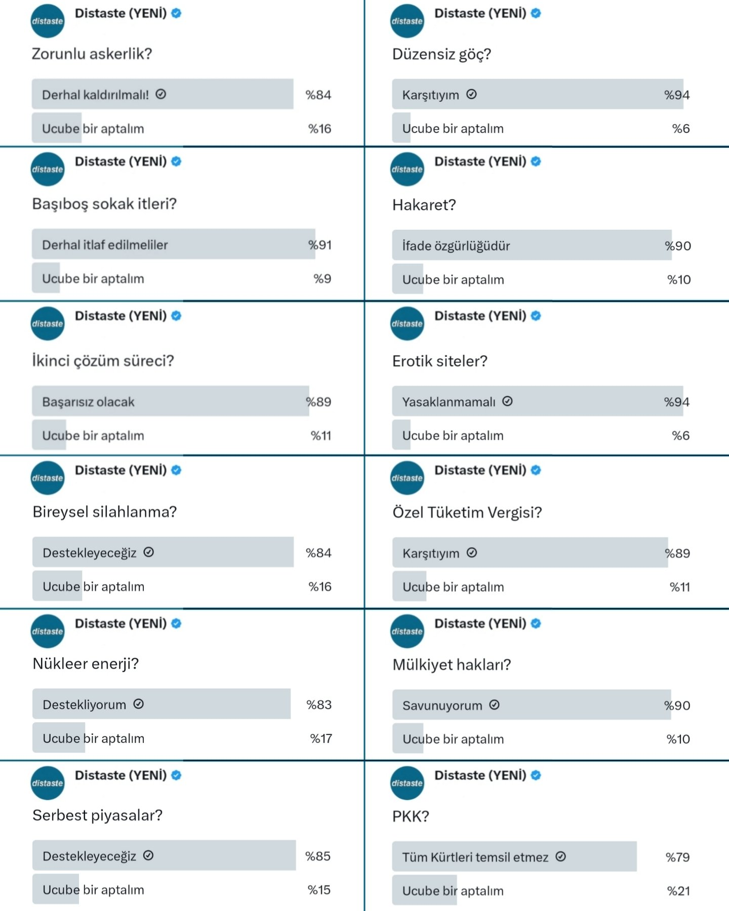
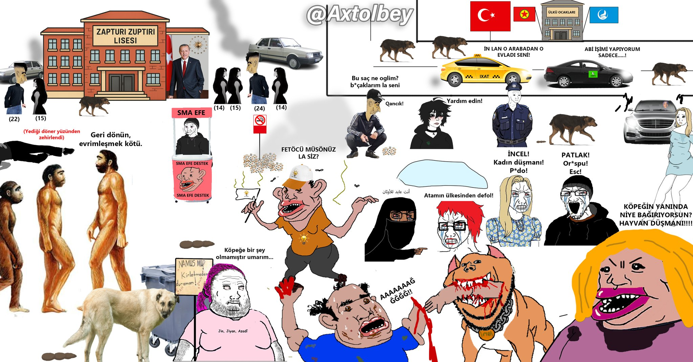

Takip Edilecekler Önerisi
Tahmini okuma süresi: 8 dakika
Bu yazıda hem Twitter'da hem de internette takip etmenizi önerdiğim hesaplara ve sitelere yer vereceğim.
DISTASTE (https://linktr.ee/distaste_):
- Kendisini uzun süredir takip ediyorum. Sanırım kendisi hemcinslerimize zorunlu köleliği dayatan, bu 5. sınıfın 3. sınıfı Orta Doğu ülkesini yerden yere vururken "Hintkiye, Aşağıkiye" ve "Osurukiye" gibi tabirleri kullanan ilk hesap olmalı.
- Kendisi öyle bir hesaptır ki, açıkçası "Twitter'da her dediğine katıldığım nadir hesaplardandır" desem yalan söylemiş olmam. Hem benim, hem de kendisinin görüşlerini özetler nitelikte olan, kendisine ait bir görseli aşağıya bırakıyorum.

DISTASTE hesabına ait görsel
Vasili Çuykov (X nick'i değişebiliyor ama şu an için https://x.com/ColaniZort31 & https://www.patreon.com/Cuykov):
- Türkiye'de hem TradCon devlettaparları, hem de Türkiye'nin bölgede destan yazdığını sanan milliyetçi tayfayı hakkıyla aşağılayan, ama aşağılarken de gerçekleri olayın tüm şeffaflığıyla açıklayan harika bir hesaptır. Kendisinin tabiriyle Türkiye denen hurdânın ne kadar aşağılık ve sefil olduğunu daha iyi anlamak için muhakkak takip etmenizi öneririm.
Merve Karataş (https://x.com/drmervekaratas & https://www.mervekaratas.com/blog):
- Bir Liberteryen olarak çok sevdiğim bir hesaptır. Terminolojileri iyi kullanarak, profesyonel bir şekilde neden devlettaparlığın sonunun fakirlik olduğunu, bireysel özgürlüklerin önemini ve daha pek çok çağdaş düşünceyi çok güzel açıklıyor. Tweetleri genel olarak hem açıklayıcı ve hem de sıkıcı olmayacak derecede uzun oluyor. Otokrasi karşıtı olan, özgürlükçü herkesin takip etmesini öneririm.
Cumhur T. (https://x.com/TroyHoplatan31):
- Kendisi aynı Distaste'ye benzer bir hesap. Yapmış olduğu paylaşımlar ve meme'ler ile Sirkiye'nin gerçek yüzünü, rezaletini ve acizliğini sade ve yalın bir şekilde insanların gözüne sokmayı başarıyor.
Axtol Bey (https://x.com/Axtolbey):
- Kendisi Twitter'da pek aktif bir hesap değil ama aşağıdaki rönesans tablosunun yaratıcısı olduğu için onu da buraya ekledim.

Axtol Bey'e ait rönesans tablosu
Mağdur Erkekler Platformu (https://x.com/magdurerkek):
- Erkeklere yapılan haksızlıkları, özellikle devletin ikiyüzlülüğünü fazlasıyla gösteren, kanıtlayan ve çok aktif bir şekilde içerik (video, haber vs.) paylaşan bir hesap. Devlet denen zorbanın hemcinslerimizi ne hale getirdiğini görmek isteyen herkes bu hesabı takip etmeli bence.
Websiteleri
Feminizm Nedir (https://feminizmnedir.com/)
- Feminizm'in ikiyüzlülüğünü, ve ayrıca buna ek olarak devletlerin erkeklere tek taraflı, asimetrik olarak ne kadar büyük yük olduklarını açıklayan, hem kitap hem de film önerilerinde bulunan epey kapsamlı bir site.
- Daha da uyanmak, ve başkalarını da uyandırmak isteyen erkeklerin bu siteyi kaydetmelerini, ve zaman zaman okumalarını tavsiye ederim.
- Bu siteyi okuduğunuzda, hem benim neden güçlü bir Anti-Natalist olduğumu da daha iyi anlayacaksınızdır diye düşünüyorum.
SON OLARAK…
- Elbette yukarıdaki kaynaklara çok daha fazlası eklenebilir ama şimdilik en önemlileri koydum. Zamanla yeni eklemeler yapmayı da düşünüyorum.
- Şu an için yukarıda bahsetmiş olduğum kaynakları takip ederseniz, büyük oranda Matrix'den çıkmaya başlarsınız zaten. Bol şans dilerim.
İletişim
Eğer benimle iletişime geçmek, yahut eklememi istediğiniz veya genel geri dönüş vermek istediğiniz bir konu varsa: